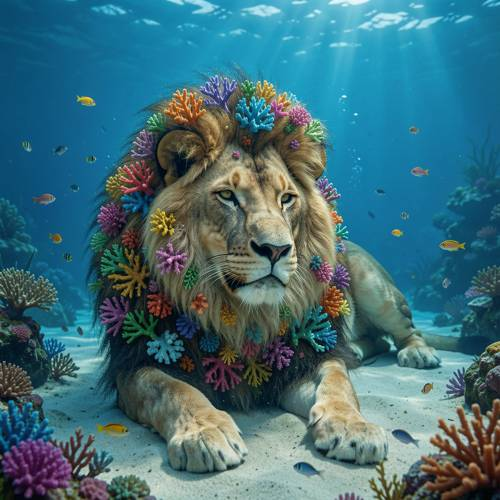
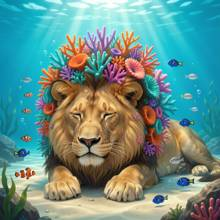

Compound — A lion lies quietly on the bottom of the sea. Its majestic mane is com
A lion lies quietly on the bottom of the sea. Its majestic mane is composed of colorful corals, and small fish are swimming safely around it.

Direct — one call, no iterationContinuum — Qwen3.8-27B + FLUX.2-klein-9B
Judge — Direct
FAILCompound - Feature Matching — The lion's mane is not entirely composed of colorful corals. The image shows a mane made of hair, with many colorful coral-like structures growing from or placed within it. The underlying material of the mane is still visible as fur.
PASSGrammar - Consistency — The pronoun 'it' in the prompt refers to the lion. In the image, numerous small fish are depicted swimming in the water around the lion's head, body, and paws.
Judge — Continuum
PASSCompound - Feature Matching — The image shows a lion with a mane that incorporates numerous colorful coral structures. The corals, which are pink, orange, purple, and turquoise, are interspersed with and form part of the lion's mane.
PASSGrammar - Consistency — The image shows several small fish, including clownfish and blue tangs, swimming in the water in the vicinity of the central lion, which is the referent for the pronoun 'it'.
What the agent did
Thinking
Let's generate this image. A lion lying at the bottom of the sea, a mane made of colorful coral, small fish swimming around. Let's create a vivid, detailed prompt using flux2-klein.
Step 1 — `generate_image`
{
"model": "flux2-klein",
"prompt": "A majestic lion lying quietly on the sandy ocean floor, at the bottom of a bright blue sea. Its mane is not fur but is made entirely of colorful corals \u2014 vibrant orange, pink, purple, and teal coral branches, fans, and polyps growing out of the head like a luxurious mane. The lion's face is a realistic golden lion, calm and serene, eyes gently closed as if napping. Small colorful fish (tiny clownfish, blue tangs, and small silver fish) swim safely around the lion, some drifting over its back and near its nose. Sunbeams stream down from the surface through clear turquoise water, scattering light. Soft seaweed and rocks around, gentle bubbles, dreamlike fantasy underwater scene, highly detailed, cinematic lighting, fantasy digital painting style.",
"width": 1024,
"height": 1024
}
Result img_0

Thinking
The image looks very good. The lion is lying at the bottom of the sea, and its mane is made of colorful corals. Small fish are swimming around it. The face has a realistic golden lion appearance with a calm expression. The fish are safely surrounding it. Let me check the details: the mane is composed of coral—yes, there's orange, purple, pink, and teal coral on the head. The lion is lying on the sandy seabed. The fish—clownfish, blue tangs, small silver fish—are swimming around it. Light rays are streaming in. This matches the prompt extremely well. Let me inspect the region to check the quality. The image looks clean. If I had to nitpick: on the right side of the body, near the back legs, there's a dark spot (a shadow or something like a dark-colored fish?). Let me check that area. There's a dark gray shape around [820, 630]. It might be an artifact. Let me inspect it.
Model
The first result looks very close to the prompt. Let me inspect a couple of details to make sure there are no artifacts.
The cropped image looks clean. The dark spots I was worried about are actually the lion's hind paws / the dark parts of its body, which is fine — realistic lion fur. The face is calm with closed eyes, the coral mane is colorful, and the fish are swimming around it. This image satisfies all the elements: 1. A lion lying at the bottom of the sea ✓ (lying on the sandy ocean floor) 2. A majestic mane made of colorful coral ✓ 3. Small fish swimming safely around it ✓ The quality is good. This is a good result. Let me mark it as the best. The image is in good enough shape — all the elements are in place and it's high quality. Good enough is the stopping condition.
Model
Both crops look clean — the mane corals are vibrant and detailed, the lion's face is serene with closed eyes, and the fish (clownfish, blue tangs, small silvers) swim peacefully around it. Every element of the prompt is present and well-rendered: - **Lion lying on the sea floor** — resting on the sandy bottom, calm and napping - **Mane of colorful corals** — orange, purple, pink, teal branch and fan corals growing around the head - **Small fish swimming safely around** — scattered across the scene at ease - Sunbeams, bubbles, seaweed complete the dreamlike underwater mood
Step 4 — `mark_best`
{
"image": "img_0",
"reason": "All prompt elements present and correct: lion lying on the ocean floor, mane fully composed of colorful corals, small fish swimming safely around, clean details on inspection."
}
Thinking
Marked as best. The image is complete and matches the prompt. Stopping here—good enough is a stopping condition.
Model
The image is complete and marked as my best result. A serene lion dozes on the sandy ocean floor, its majestic mane a crown of vivid orange, purple, pink, and teal corals, while small colorful fish glide safely around it beneath the sunlit water.